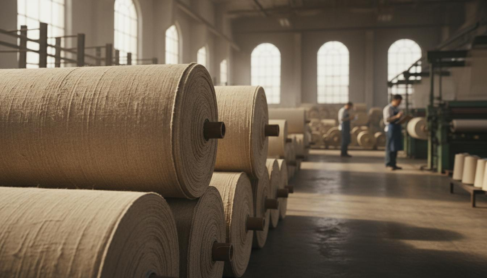
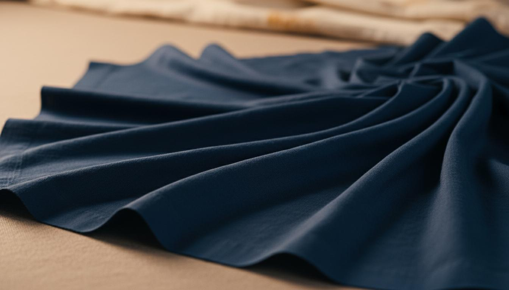
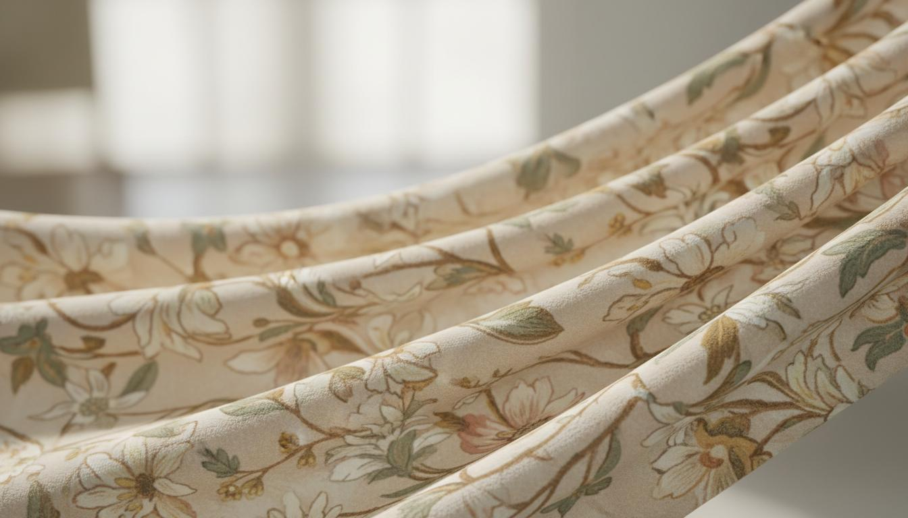
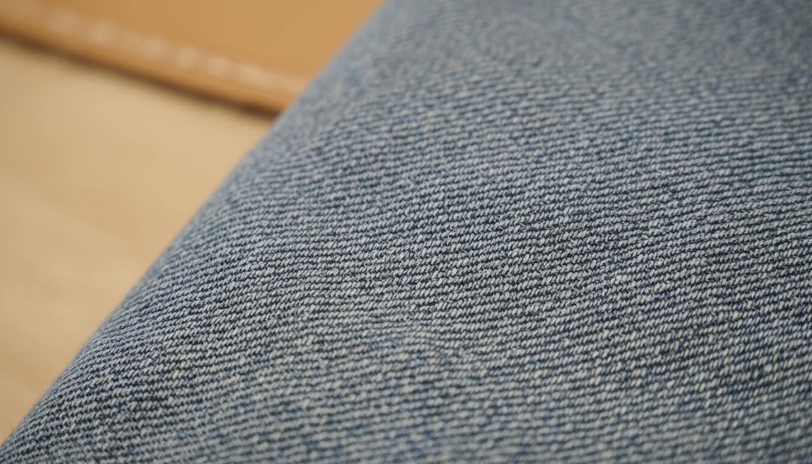
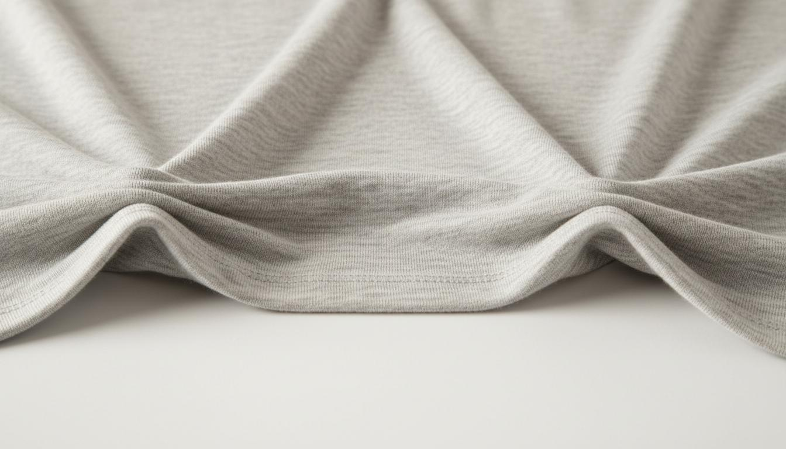

Global Textile Sourcing & Export Since 2007
Browse our comprehensive collection of premium fabrics. All in-stock items are ready for immediate shipment.

Premium quality cotton poplin, perfect for shirting and dress applications. Smooth finish with excellent dye uptake.
Lightweight, sheer cotton voile ideal for summer garments and scarves.
Fine, closely woven cambric with smooth surface. Excellent for premium garments.
Luxurious sateen weave with subtle sheen. Perfect for high-end bedding and apparel.
Durable poly-cotton blend offering easy care and wrinkle resistance.

Vibrant reactive dyed poplin with excellent color fastness. Available in multiple colors.
Heavy-duty canvas with vintage pigment dye effect. Perfect for bags and outerwear.
Deep, rich vat dyed colors with superior wash fastness. Ideal for workwear.
Lightweight sulfur dyed denim with authentic vintage character.

Beautiful floral designs on premium poplin base. Perfect for women's wear.
Contemporary geometric patterns on lightweight voile.
Classic paisley designs on soft lawn fabric. Ideal for summer collections.
High-definition digital prints on luxurious sateen base.

Authentic rope-dyed indigo denim with classic red selvedge.
Comfort stretch denim with excellent recovery. Perfect for skinny jeans.
Deep black sulfur-dyed denim with excellent color retention.
Fashion colors including grey, olive, and burgundy.

Soft, breathable single jersey perfect for t-shirts and casual wear.
Classic pique texture ideal for polo shirts.
Stretch rib knit perfect for cuffs, collars, and waistbands.
Comfortable French terry with looped back. Ideal for sweatshirts.
Smooth, stable interlock knit with excellent drape.
Contact us for custom fabric development and sourcing
Contact Us Now